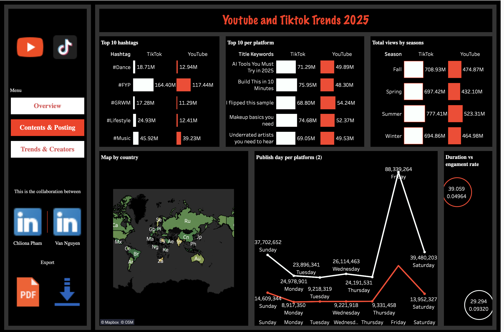
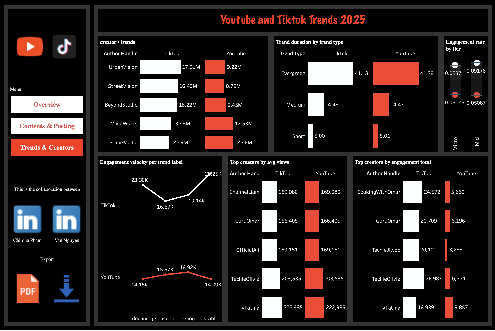

Data Analytics • Dashboard Storytelling
YouTube & TikTok Trends 2025
A polished three-page analytics experience comparing content performance, posting patterns, and creator behavior across TikTok and YouTube.
3
Dashboard pages
2
Platforms analyzed
100%
Story-driven insights
Project Snapshot
This project explores short-form and long-form performance using views, engagement, posting cadence, and creator-level signals. It helps marketers and creators decide what to publish, when to publish, and who to partner with.
Overview
Summarizes total and average views, engagement velocity, average views per video, and country engagement rate.
Contents & Posting
Highlights winning hashtags, title patterns, seasonal lifts, country maps, and publish-day spikes.
Trends & Creators
Evaluates trend longevity, engagement by creator tier, and top performers by views and engagement.
Dashboard Preview



Tools & Technologies
- Tableau Public for interactive analytics and dashboard storytelling
- SQL (PostgreSQL/MySQL) for ad-hoc exploratory analysis
Key Insights
- Scale & velocity: TikTok often shows higher total views and faster engagement velocity, while average views per video remain comparable.
- Seasonality: Performance spikes during summer and fall, with Fridays showing the strongest posting-day lift.
- Content cues: Utility-driven titles and broad hashtags remain reliable reach drivers.
- Creators: Mid-tier creators can deliver strong engagement efficiency and are often strong partnership candidates.